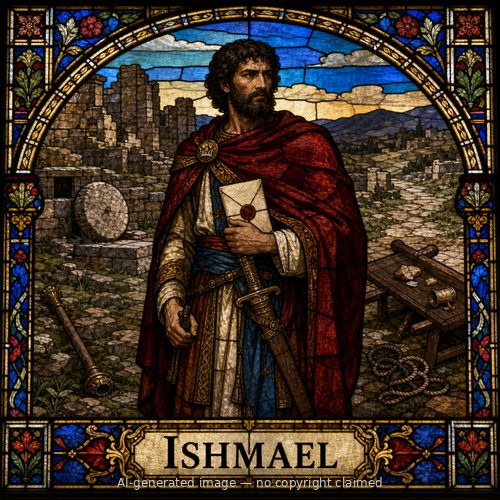

Ishmael was born to Abraham and Hagar when Abraham was eighty-six, the result of Sarai's plan to obtain an heir through her servant while God's promise of a son through Sarah still seemed impossible (Genesis 16:15-16). When God renewed His covenant and instituted circumcision as its sign, Ishmael was circumcised alongside his father at thirteen — even though the covenant itself would continue through a son not yet born to Sarah (Genesis 17:18-27). Abraham's plea, 'Oh that Ishmael might live before You!', shows real paternal love even as the covenant was redirected, and God answered: Ishmael would be blessed, multiplied, and father twelve princes — just not the nation of promise (Genesis 17:20). After Isaac's birth, Sarah demanded Ishmael and his mother be cast out; distressed, Abraham obeyed after God again promised to make a nation of Ishmael too (Genesis 21:8-13). Sent into the wilderness, Ishmael nearly died of thirst before God heard his voice and provided a well; Scripture says plainly 'God was with the lad,' and he grew up in Paran, became an archer, and was given an Egyptian wife by his mother (Genesis 21:17-21). His genealogy in Genesis 25:12-18 deliberately parallels Jacob's: twelve sons who became twelve tribal princes. Ishmael died at 137, but before that he and Isaac reappear at a moment of quiet reconciliation, burying their father Abraham side by side at Machpelah — two half-brothers whose lines had been separated by the covenant but who stood together at their father's grave (Genesis 25:9, 17).
Thought for Today
Abraham pleaded, 'Oh that Ishmael might live before You,' and though the covenant promise ran through Isaac instead, God still promised to bless Ishmael and be with him. Jesus fulfills God's promise to Abraham's true offspring, but His mercy toward those outside that specific promise, like Ishmael, was still real mercy, not indifference.
References: Genesis 16; Genesis 17:18-27; Genesis 21:8-21; Genesis 25:9; Genesis 25:12-18
Genealogy
Connections
- Abraham (M) — begot → Ishmael (M)
- Hagar (F) — bore → Ishmael (M)
- Ishmael (M) — begot → Nebaioth (M)
- Ishmael (M) — begot → Kedar (M)
- Ishmael (M) — begot → Adbeel (M)
- Ishmael (M) — begot → Mibsam (M)
- Ishmael (M) — begot → Mishma (M)
- Ishmael (M) — begot → Dumah (M)
- Ishmael (M) — begot → Massa (M)
- Ishmael (M) — begot → Hadad (M)
- Ishmael (M) — begot → Tema (M)
- Ishmael (M) — begot → Jetur (M)
- Ishmael (M) — begot → Naphish (M)
- Ishmael (M) — begot → Kedemah (M)
- Ishmael (M) — begot → Basemath (F)
Places
- Canaan — Abram's son by Hagar, born in this land
Genesis 16:15-16
- Wilderness of Paran — grew up in this wilderness and became an archer there
Genesis 21:20-21
Other people named Ishmael
